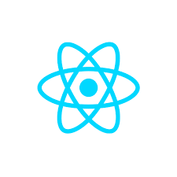
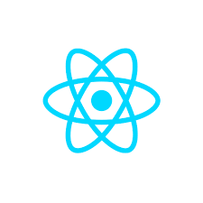

Hi there ✋, I am Mutiyah Muritala.
Based in Lagos, Nigeria.A tech enthusiast & aspriring fullstack developer
Trainee at Zuri 2022 cohort.
About me
I am Mutiyah Muritala, my close friends call me Kemzy. I am calm, hardworking and gritty. I live in Lagos State and i hail Osun state. I am a computer science graduate of Yaba College of Technology. I graduated in 2019 and i completed my one year National Youth Service Corps (NYSC) program on 16th Febuary 2022 at Ministry of Transport Minna, Niger State. I started learning how to code in 2018 while in school but i became more consistent in 2020 during the lockdown because i couldn't go to work. It has been an challenging journey but with consistency, i can say i am getting better with coding. I have tried to learning different technologies and languages (Lemme stop here... Lolz 😝 ). I am ready to put in my very best in this Zuri cohort training and i am hoping to land my first job as a developer soonest.
Hobbies 👉
- Coding
- Playing game
- Surfing the internet
- Travelling
- Reading
- With friends
Priorities 👉
- God
- Family
- Learning
- Relationship
- Friends
Skills 👉


 
